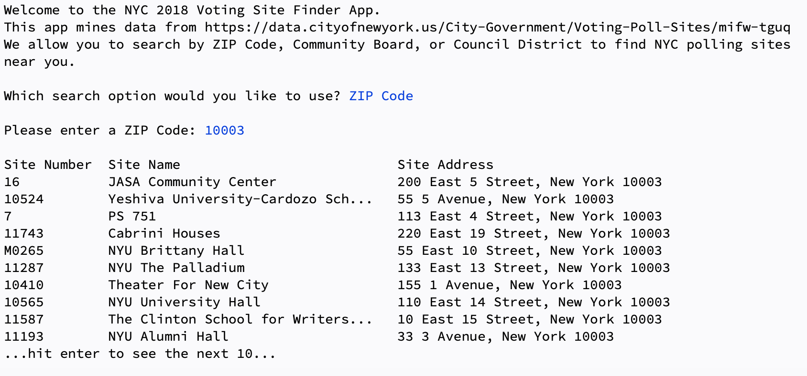
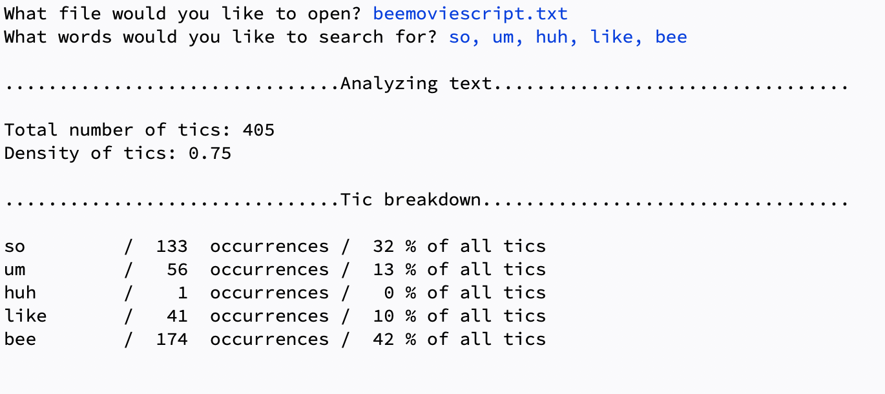
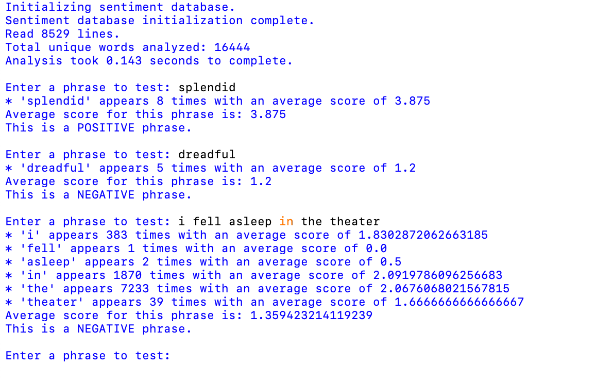

This program converts Voting/Poll data from the City of New York into a multi-dimensional array and allows the user to user multiple search options to peruse this data.
This program allows the user to search through any text file for specific verbal ticks, providing an itemized list of said words and their frequency in the text.
This program uses a movie review database to learn average sentiment scores of thousands of words and create a dictionary that allows the user to input their own words or phrases and receive back a sentiment report.
